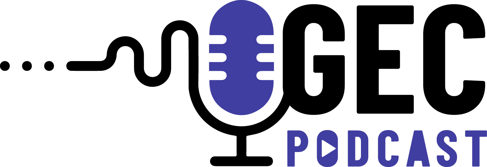
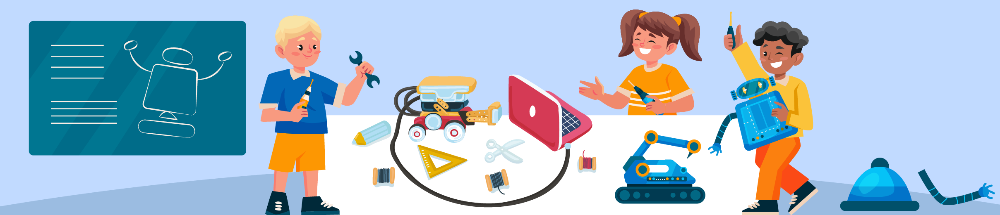
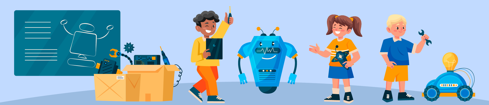
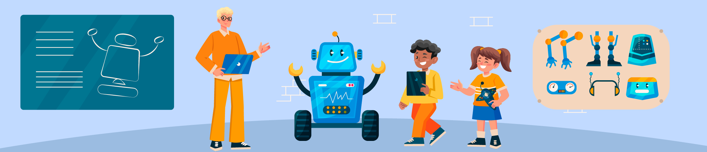
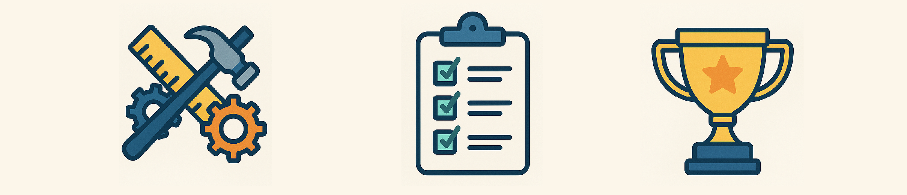

Información General del Proyecto
Ciencias Naturales (Física - ÉNFASIS), Tecnología e Informática (Tecnología - ÉNFASIS), Matemáticas (ÉNFASIS), Ingeniería (integrada), Artes, Ciencias Sociales.
5. Idea/Tema Central del Proyecto

Los estudiantes investigarán los principios fundamentales de las máquinas simples (palancas, poleas, planos inclinados, tornos, cuñas y ruedas) y los conceptos asociados de fuerza, trabajo mecánico y energía. Posteriormente, trabajando en equipos colaborativos, aplicarán estos conocimientos para identificar una necesidad o problema simple en su entorno escolar o comunidad cercana, y luego diseñarán, construirán y probarán prototipos de máquinas simples funcionales que ofrezcan una solución viable y eficiente a dicha necesidad.
6. Descripción del Problema o Desafío
En nuestro día a día, tanto en la escuela como en nuestras casas, a menudo realizamos tareas que requieren esfuerzo físico. La falta de comprensión sobre cómo funcionan las máquinas simples y cómo pueden ser diseñadas para resolver problemas cotidianos limita nuestra capacidad para innovar y mejorar nuestro entorno de manera práctica.

Pregunta Problematizadora Central:
¿Cómo podemos, como jóvenes científicos y diseñadores, aplicar los principios de la física (fuerza, trabajo, energía) y el proceso de diseño tecnológico para crear máquinas simples innovadoras y funcionales que resuelvan una necesidad real en nuestra escuela o comunidad, demostrando así el poder de la ciencia y la ingeniería para transformar nuestro entorno?
Desafío Específico:
Diseñar y construir en equipo un prototipo funcional de una máquina simple (o una combinación de ellas) que resuelva un problema o facilite una tarea específica identificada dentro del contexto escolar o comunitario, utilizando principalmente materiales reciclados o de bajo costo, y que sea capaz de demostrar una ventaja mecánica medible o observable.
7. Objetivo General del Proyecto
Desarrollar en los estudiantes de Ciclo III (grados 6° y 7°) la comprensión de los principios de funcionamiento de las máquinas simples y su relación con los conceptos de fuerza, trabajo y energía, a través del diseño, construcción y evaluación de prototipos tecnológicos que respondan a necesidades identificadas en su contexto, fomentando así competencias STEAM, habilidades del Siglo XXI y una actitud proactiva hacia la resolución de problemas.
Objetivos Específicos y Habilidades del Siglo XXI
8. Objetivos Específicos de Aprendizaje
(Agrupados por área, con Habilidades S.XXI asociadas)
Ciencias Naturales (Física)
- OE1: Identificar los diferentes tipos de máquinas simples (palanca, polea, plano inclinado, torno, cuña, rueda y eje) y explicar su principio de funcionamiento básico. (Habilidades: Pensamiento Crítico, Comunicación)
- OE2: Explicar la relación entre fuerza, trabajo mecánico y energía en máquinas simples. (Habilidades: Pensamiento Crítico, Alfabetización de Datos)
- OE3: Formular hipótesis sobre ventaja mecánica y diseñar experimentos simples. (Habilidades: Pensamiento Crítico, Resolución de Problemas, Pensamiento Computacional)
Tecnología e Informática (Tecnología & Ingeniería)
- OE4: Aplicar un proceso de diseño tecnológico para crear un prototipo. (Habilidades: Resolución de Problemas, Creatividad, Pensamiento Crítico)
- OE5: Utilizar de manera segura herramientas y materiales para la construcción. (Habilidades: Colaboración, Resolución de Problemas)
- OE6: Evaluar funcionalidad y eficiencia de prototipos, proponer mejoras. (Habilidades: Pensamiento Crítico, Resolución de Problemas, Alfabetización de Datos)
Matemáticas
- OE7: Realizar mediciones precisas y usar unidades apropiadas. (Habilidades: Alfabetización de Datos, Pensamiento Crítico)
- OE8: Aplicar razones y proporciones para comprender/calcular ventaja mecánica. (Habilidades: Pensamiento Crítico, Alfabetización de Datos)
- OE9: Utilizar representaciones gráficas (bocetos, esquemas) para comunicar diseños. (Habilidades: Comunicación, Creatividad)
Artes (Integrado)
- OE10: Aplicar principios de diseño estético y funcional en prototipos. (Habilidades: Creatividad, Comunicación)
Ciencias Sociales (Integrado)
- OE11: Investigar y discutir el impacto histórico y social de las máquinas simples. (Habilidades: Pensamiento Crítico, Comunicación)
- OE12: Colaborar eficazmente en equipo. (Habilidades: Colaboración, Comunicación)
Habilidades del Siglo XXI Desarrolladas
- Pensamiento Crítico
- Resolución de Problemas
- Colaboración
- Comunicación (Oral, Escrita, Multimodal)
- Creatividad e Innovación
- Alfabetización de Datos
- Pensamiento Computacional
Fases y Actividades Detalladas del Proyecto
9. Fases o Etapas del Proyecto
- Fase 1: Despertar la Curiosidad – El Desafío de la Fuerza (1 Semana)
- Fase 2: Exploradores de la Física y la Ingeniería – Investigación y Fundamentación (2 Semanas)
- Fase 3: ¡Manos a la Obra! – Diseño y Planificación (2 Semanas)
- Fase 4: Construyendo Soluciones – Creación y Pruebas Iniciales (3 Semanas)
- Fase 5: Demostrando el Ingenio – Pruebas Finales, Presentación y Reflexión (2 Semanas)
10. Actividades Detalladas por Fase
Fase 1: Despertar la Curiosidad – El Desafío de la Fuerza
- Actividad 1.1 (Inmersión): "El Misterio del Esfuerzo". Presentar situaciones, demostraciones, discusión.
- Actividad 1.2 (Presentación del Desafío): Introducir la pregunta problematizadora y el desafío.
- Actividad 1.3 (Lluvia de Ideas de Necesidades): "Detectives de Problemas". Identificar problemas en la escuela/comunidad.
Fase 2: Exploradores de la Física y la Ingeniería – Investigación y Fundamentación
- Actividad 2.1 (Investigación Guiada): "El Universo de las Máquinas Simples". Investigación de los 6 tipos.
- Actividad 2.2 (Conceptos Clave): "Fuerza, Trabajo y Energía en Acción". Explicación y discusión.
- Actividad 2.3 (Mini-Experimentos): "Probando los Principios". Estaciones de experimentación.
- Actividad 2.4 (Impacto Histórico): "Gigantes sobre Hombros de Máquinas". Investigación breve.
Fase 3: ¡Manos a la Obra! – Diseño y Planificación
-

- Actividad 3.1 (Selección del Problema y Lluvia de Soluciones): Equipos eligen problema y proponen soluciones.
- Actividad 3.2 (Bocetos y Diseños Preliminares): "Del Concepto al Papel".
- Actividad 3.3 (Diseño Detallado y Planos Simples): Con medidas y consideración de ventaja mecánica.
- Actividad 3.4 (Plan de Trabajo y Lista de Materiales): Pasos, roles, materiales (reciclados).
Fase 4: Construyendo Soluciones – Creación y Pruebas Iniciales
-

- Actividad 4.1 (Construcción del Prototipo): "Dando Vida a las Ideas".
- Actividad 4.2 (Pruebas Formativas y Registro de Datos): "¿Funciona como Esperábamos?".
- Actividad 4.3 (Iteración y Ajustes): "Mejorando el Diseño".
Fase 5: Demostrando el Ingenio – Pruebas Finales, Presentación y Reflexión
-

- Actividad 5.1 (Optimización y Acabados Finales).
- Actividad 5.2 (Preparación de la Presentación): "Comunicando la Solución".
- Actividad 5.3 ("Feria de Máquinas Simples"): Presentación y demostración.
- Actividad 5.4 (Evaluación y Reflexión Final): "Aprendizajes del Viaje".
Recursos Necesarios, Evaluación y Productos
11. Recursos Necesarios
Cartón, madera delgada, tubos, cuerdas, alambre, tornillos, tapas, botellas, latas, CDs, pegamento, cinta adhesiva, etc.
Reglas, tijeras, cúteres, sierras pequeñas, destornilladores, alicates, martillo, pistola de silicona (opcional), dinamómetros (ideal).
Aula con mesas de trabajo, espacio para pruebas.
Video beam/TV, acceso a internet (curado), cámaras (opcional).
Docente facilitador, apoyo opcional de comunidad.
Papel, lápices, colores, marcadores, cuadernos/bitácoras.
12. Evaluación del Proyecto
Diagnóstica: Cuestionario inicial, observación.
Formativa: Observación y registro, revisión de avances (fichas, bocetos, prototipos), retroalimentación, autoevaluación y coevaluación.
Sumativa: Prototipo Funcional (40%), Presentación Oral (30%), Bitácora/Informe (20%), Participación y Trabajo en Equipo (10%).
13. Producto(s) Final(es) o Evidencias Tangibles
- Prototipo funcional de una máquina simple.
- Bitácora o Cuaderno de Diseño del Proyecto.
- Presentación Oral y Demostración del Prototipo.
- (Opcional) Material de Divulgación (cartel, video corto).
14. Vinculación con el Contexto y la Comunidad
El proyecto se vincula mediante la identificación de necesidades locales, la creación de soluciones prácticas usando recursos del entorno, la "Feria de Máquinas Simples" para compartir con la comunidad escolar, y la conexión con oficios y profesiones locales.
Rúbrica de Evaluación Detallada
| Criterio de Evaluación | Nivel Bajo (1.0-2.9) | Nivel Básico (3.0-3.9) | Nivel Alto (4.0-4.5) | Nivel Superior (4.6-5.0) |
|---|---|---|---|---|
| 1. Comprensión y Aplicación de Principios Científicos (Física) | Muestra escasa comprensión de los tipos de máquinas simples y los conceptos de fuerza, trabajo y energía. El prototipo no refleja una aplicación clara de estos principios. | Identifica algunos tipos de máquinas simples y conceptos básicos de fuerza/trabajo, but con imprecisiones. El prototipo aplica los principios de forma limitada o con errores conceptuales. | Explica correctamente la mayoría de los tipos de máquinas simples y su relación con fuerza, trabajo y energía. El prototipo aplica adecuadamente los principios físicos fundamentales. | Demuestra una comprensión profunda y precisa de las máquinas simples, fuerza, trabajo y energía. El prototipo es un claro ejemplo de la aplicación ingeniosa de estos principios. |
| 2. Diseño y Construcción Tecnológica (Ingeniería) | El diseño es poco claro, inviable o no responde al problema. La construcción es precaria, inestable o no funcional. No sigue un proceso de diseño evidente. | El diseño es básico y responde parcialmente al problema. La construcción es funcional pero con deficiencias notables en estabilidad o acabados. Proceso de diseño con etapas omitidas o poco desarrolladas. | El diseño es claro, viable y responde adecuadamente al problema. La construcción es funcional, estable y utiliza los materiales de forma apropiada. Sigue las etapas principales del proceso de diseño. | El diseño es innovador, eficiente y responde de forma óptima al problema. La construcción es robusta, bien acabada y demuestra un uso inteligente de los materiales. Evidencia un proceso de diseño iterativo y reflexivo. |
| 3. Aplicación de Conceptos Matemáticos | No realiza mediciones o son muy imprecisas. No hay evidencia de uso de representaciones gráficas o cálculos para el diseño o análisis. | Realiza algunas mediciones con errores. Los bocetos son simples. Intenta cálculos básicos de ventaja mecánica (si aplica) con dificultad o errores significativos. | Realiza mediciones precisas. Utiliza bocetos y esquemas claros para el diseño. Aplica correctamente conceptos de razón/proporción para estimar o calcular la ventaja mecánica (si aplica). | Realiza mediciones muy precisas y pertinentes. Los planos o esquemas son detallados y útiles. Demuestra habilidad en el cálculo y la interpretación de la ventaja mecánica (si aplica), justificando sus resultados. |
| 4. Producto Final (Prototipo Funcional) | El prototipo no funciona o lo hace de manera muy deficiente. No cumple el propósito para el que fue diseñado. No demuestra ventaja mecánica observable. | El prototipo funciona parcialmente o con dificultad. Cumple mínimamente su propósito. La ventaja mecánica es poco evidente o inconsistente. | El prototipo es funcional y cumple bien su propósito. Demuestra una ventaja mecánica observable y útil para la tarea planteada. | El prototipo es altamente funcional, eficiente y cumple su propósito de manera sobresaliente. Demuestra una clara y significativa ventaja mecánica, optimizando el esfuerzo. |
| 5. Trabajo en Equipo y Colaboración | Poca participación individual en el equipo, conflictos no resueltos, roles no asumidos, falta de comunicación. No se logra un trabajo conjunto. | Participación desigual en el equipo, dificultades en la comunicación y toma de decisiones. Logros grupales limitados por falta de cohesión. | Buena colaboración general, roles distribuidos, comunicación efectiva la mayor parte del tiempo. Se logran los objetivos grupales. | Excelente colaboración, comunicación asertiva y respetuosa, roles bien definidos y flexibles. Sinergia en el equipo que potencia los resultados. |
| 6. Comunicación y Presentación del Proyecto (Oral y Bitácora) | La presentación es confusa, incompleta y no explica el proyecto. La bitácora está incompleta, desorganizada o no refleja el proceso. | La presentación es básica, con algunas omisiones o falta de claridad. La bitácora registra algunas etapas pero de forma superficial o con vacíos. | La presentación es clara, organizada y explica adecuadamente el proyecto, el prototipo y los aprendizajes. La bitácora está completa, organizada y refleja bien el proceso. | La presentación es atractiva, muy clara, concisa y demuestra dominio del tema. La bitácora es detallada, reflexiva, bien estructurada y evidencia un aprendizaje profundo. |
| 7. Habilidades del Siglo XXI (Creatividad, Resolución de Problemas, Pensamiento Crítico) | Muestra poca creatividad en la solución. Dificultad para identificar o resolver problemas durante el proyecto. Poca reflexión crítica sobre el proceso. | Propone soluciones convencionales. Resuelve problemas básicos con ayuda. Realiza una reflexión superficial sobre el trabajo. | Demuestra creatividad en el diseño o en la solución de problemas. Resuelve autónomamente la mayoría de los problemas. Analiza críticamente su proceso y resultados. | Propone soluciones originales e ingeniosas. Aborda y resuelve problemas complejos de forma efectiva. Demuestra un alto nivel de pensamiento crítico y metacognición. |